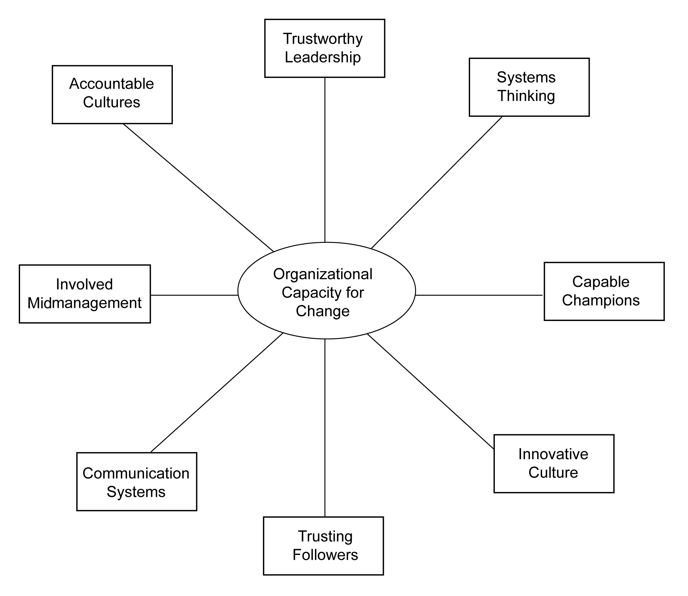

This book seeks to assist leaders in building their organizational capacity for change. It is written for any executive who seeks to be more proactive toward change, and wants the process to be less painful and somewhat more predictable. In this first chapter, my objective is to challenge the conventional views about leadership and change so that you can begin to pursue the “genius of the and.”Collins and Porras (1994).
Chapter 2 "What Is Organizational Capacity for Change?" begins by examining what is organizational capacity for change, and why it is important. The one thing that you can be certain of in your future is that you and your organization will need to change. This chapter explores how some organizations do that well. In addition, you will learn that organizational capacity for change comprises eight dimensions, as summarized in Figure 1.1 "Eight Dimensions of Organizational Capacity for Change", and that each succeeding chapter goes into depth on each of these dimensions.
The first dimension of organizational capacity for change, trustworthy leadership, is the focus of Chapter 3 "OCC Dimension 1: Trustworthy Leadership". This chapter explains that authority is not enough to make an organization change capable; the strategic leaders must be perceived to be competent and looking out for the well-being of the rest of the employees in the organization. However, a strategic leader or leaders behaving in a trustworthy fashion are not enough; the followers within the organization must be favorably disposed to trusting their organization. In essence, you also need trusting followers to be change capable. Therefore, in Chapter 4 "OCC Dimension 2: Trusting Followers", we examine how important effective followership is within an organization in order to make it change capable. Together, these two human capital dimensions combine to yield the level of organizational trust that exists within the organization and throughout the organizational hierarchy.
Figure 1.1 Eight Dimensions of Organizational Capacity for Change
Chapter 5 "OCC Dimension 3: Capable Champions" explores the important role of capable champions within change-capable organizations. Change champions are those individuals within the senior executive group, the middle management ranks, or both who drive the change initiatives within an organization. These individuals are often mavericks and they don’t normally fit in well in bureaucratic structures. However, their misfit nature is exactly what is needed in order to drive change successfully.
Chapter 6 "OCC Dimension 4: Involved Midmanagement" examines the role that involved middle managers play in making the organizational change capable. In many organizations, middle management has been hollowed out, downsized, and replaced by computers. The remaining middle management group is often uninvolved with the strategy formation design initiatives. This is a mistake. Middle managers have a unique and important role to play in enhancing the change capability of the organization. When an organization comprises capable champions and involved midmanagement, then you have an opportunity for lateral leadership and effective influence without authority—a key ingredient for making your organization more agile.
Chapter 7 "OCC Dimension 5: Systems Thinking" focuses on systems thinking within the organization. Organizations are complex living systems that are not properly understood by linear thinking and analysis. In this chapter, we explore how systems thinking gets cultivated so that organizational learning is accelerated. Then in Chapter 8 "OCC Dimension 6: Communication Systems", the importance of effective communication systems is investigated. When an organization combines systems thinking with high-functioning communication systems, systemic knowledge is created and dispersed throughout the organization.
The final two chapters explore the role of organizational culture and change. Specifically, Chapter 9 "OCC Dimension 7: Accountable Culture" demonstrates the importance of having an accountable culture where there are consequences for employees that fail or succeed. However, this cultural attribute needs to be counterbalanced with an innovative culture, which is the focus of Chapter 10 "OCC Dimension 8: Innovative Culture". Together, these two dimensions of organizational change capacity—accountability and innovativeness—help to ensure that the organization efficiently marshals scarce resources while creatively looking to the future.
Chapter 11 "The Big Picture" provides a “big picture” perspective on organizational capacity for change, as well as guidance for assessing your organization’s capacity for change. Specifically, it provides ideas and suggestions for utilizing the survey listed in Chapter 12 "Appendix A: OCC Survey Instrument" to collect data and the benchmark data listed in Chapter 13 "Appendix B: 8 Dimensions and Factor Loadings for OCC", Chapter 14 "Appendix C: OCC Benchmarking", and Chapter 15 "Appendix D: OCC Benchmarking" that can be used for comparisons between your organization and other organizations that have already been assessed. Chapter 17 "References" contains the references cited in this book, and Chapter 16 "Appendix E: Resources" contains some simulations, readings, and cases that can be used to further explore the organizational capacity for change framework. Chapter 16 "Appendix E: Resources" also contains additional resources for teaching, researching, and learning about organizational capacity for change.